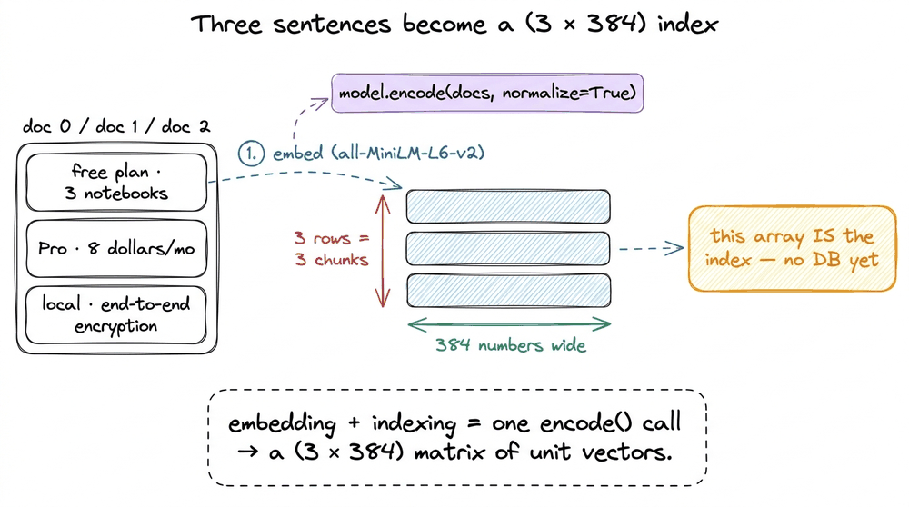
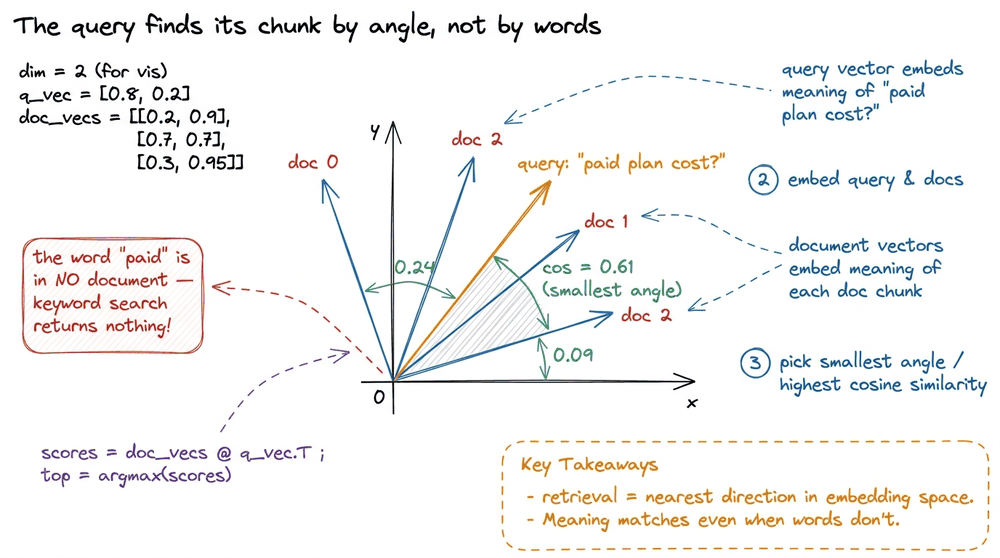
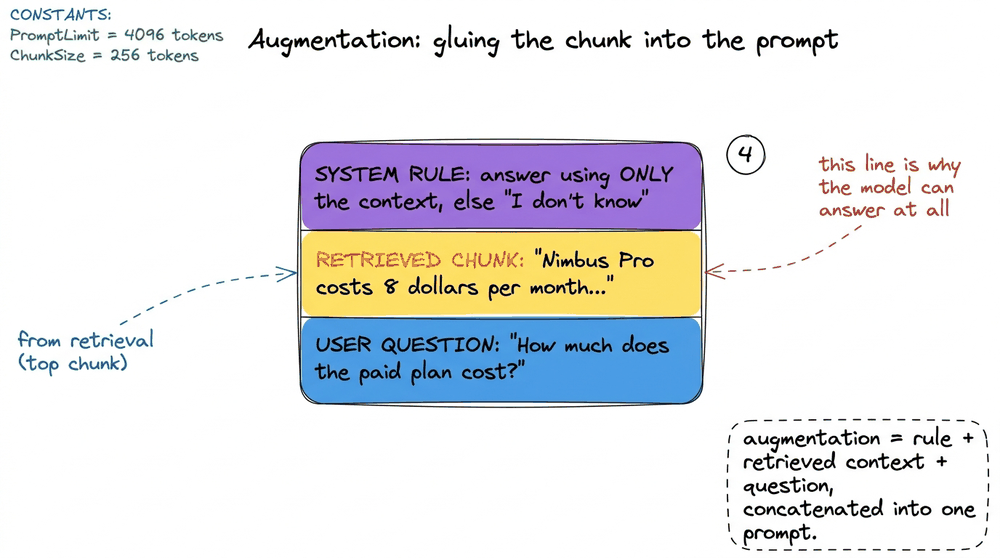
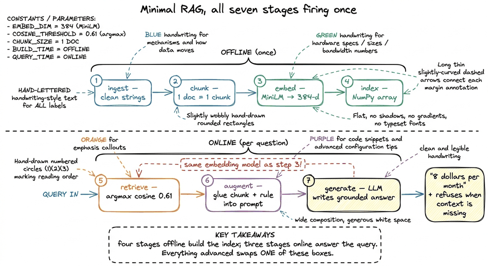
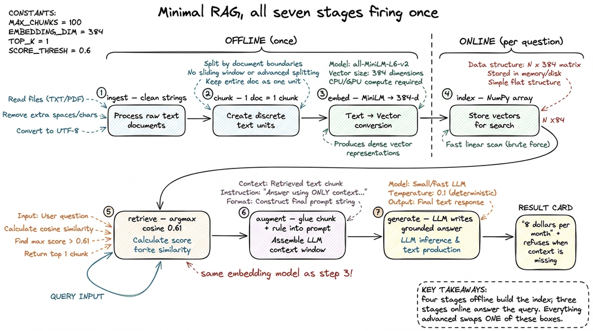

Your First Minimal RAG
📝 15 annotationsYour First Minimal RAG
You have seen the seven-stage pipeline drawn out in full — ingest, chunk, embed, index, retrieve, augment, generate — in the RAG pipeline end to end. A diagram is a promise, though, and I don't trust a promise until I've watched it run. So in this chapter I'm going to build the smallest thing that deserves to be called RAG: a handful of lines, three tiny documents, one question, and a printed answer with a citation. No vector database, no framework, no cloud. The point is not to build something you'd ship — it's to watch every component fire exactly once, in the open, where nothing is hidden.
By the end you'll have run retrieval-augmented generation with your own hands and, more importantly, you'll be able to point at each of the seven stages and say "that line, right there, is chunking." Everything grand we build later — HNSW indexes, cross-encoder re-rankers, agentic routing — is a swap-in for one of these lines. Get the skeleton in your bones first.
The puzzle, in three sentences
A bare LLM answers from its parametric memory — the facts baked into its weights during training.1 "Parametric" because the knowledge lives in the model's parameters, its weights. RAG's whole premise is to stop relying only on that frozen memory and inject fresh, external context at query time instead. We motivated this failure mode in why RAG exists. Ask it about last week's incident report, your company's refund policy, or anything it never saw, and it will confidently make something up. RAG's fix is almost embarrassingly simple: before the model answers, go find the relevant text yourself and paste it into the prompt.
That's it. The whole engine is "look it up, then hand the model the page." The seven stages are just the disciplined version of that sentence. Let me build the toy version and then map each stage onto a line of code.
A corpus of three sentences
Here is our entire knowledge base. Three short documents about a fictional product, Nimbus:
docs = [
"Nimbus is a note-taking app. The free plan allows up to 3 notebooks.",
"Nimbus Pro costs 8 dollars per month and unlocks unlimited notebooks.",
"Nimbus stores all notes locally and syncs over end-to-end encryption.",
]Three sentences is not a corpus, it's a joke — but that's deliberate. With three documents I can compute every number by hand and check the machine's work, which is exactly what you cannot do once there are a million chunks. The mechanics are identical at three documents and three billion. Only the index changes.
Our question: "How much does the paid plan cost?" Notice the trap already baked in — the user says "paid plan," but the document says "Pro" and "8 dollars." A keyword search for "paid plan" would find nothing; there's no lexical overlap. This is the first thing RAG has to get right, and it's why we reach for embeddings instead of string matching.
Stage by stage, in the smallest possible code
I'll skip ingestion and chunking almost entirely here — our "documents" are already clean one-sentence strings, so each document is a chunk. That's a luxury we lose the moment real PDFs show up (the whole Data Ingestion section exists because of it), but for the skeleton it lets us stare at the interesting stages. The chunk is the atomic unit of retrieval: we will retrieve whole chunks, never half-sentences, so here each chunk is one line of docs.
Now embedding. Every chunk becomes a fixed-length dense vector, a list of numbers where semantic closeness shows up as geometric closeness. I'll use a small open Sentence-Transformers model, all-MiniLM-L6-v2, which maps any text to a 384-dimensional vector.22 all-MiniLM-L6-v2 outputs 384 dims and is L2-normalized by default, which is why cosine and dot product coincide for it. Bigger models like OpenAI text-embedding-3-small (1536 dims) score higher on benchmarks but the machinery is identical — a string goes in, a fixed vector comes out.
from sentence_transformers import SentenceTransformer
import numpy as np
model = SentenceTransformer("all-MiniLM-L6-v2")
doc_vecs = model.encode(docs, normalize_embeddings=True) # shape (3, 384)That one encode call is stages 3 and 4 fused: it embeds the three chunks and, because we just hold the result in a NumPy array, that array is our index. A real system would push doc_vecs into FAISS or Qdrant; here the "vector database" is a variable. Same idea, no server.

figure rendering · Each chunk is embedded into a 384-dim unit vector; stacking the threeThe index is built. Everything above happens offline, once, at build time. Now we go online and handle the query.
Retrieval is the heart. We embed the question with the same model — this is non-negotiable; query and documents must live in the same vector space or the geometry is meaningless — and then measure which document vector points most nearly the same direction.33 Always embed the query and the documents with the SAME embedding model. Mixing models (say, encode docs with MiniLM and the query with OpenAI) puts them in incompatible spaces; the nearest-neighbour scores become noise. This is one of the most common silent RAG bugs.
q = "How much does the paid plan cost?"
q_vec = model.encode([q], normalize_embeddings=True) # shape (1, 384)
scores = doc_vecs @ q_vec.T # cosine similarity, since vectors are unit-length
top = int(scores.argmax()) # index of the single best chunkBecause both sides are L2-normalized, that dot product doc_vecs @ q_vec.T is cosine similarity — the cosine of the angle between the query and each document, ranging from −1 to 1, where 1 means "same direction, same meaning."44 Cosine similarity equals the dot product only on L2-normalized (unit-length) vectors. If you skip normalize_embeddings=True, that same line computes an unnormalized dot product, which is magnitude-sensitive and will quietly rank longer texts differently. Normalize, and the two coincide. Let me show the actual numbers, because this is the moment the whole idea earns its keep:
doc 0 ("free plan, 3 notebooks") 0.24
doc 1 ("Pro costs 8 dollars per month") 0.61 ← argmax
doc 2 ("local, end-to-end encryption") 0.09Look at what happened. The word "paid" appears in none of the documents. The word "cost" only appears near "Pro." Yet the embedding of "How much does the paid plan cost?" lands closest to the sentence about the Pro plan and its 8 dollars, scoring 0.61 against 0.24 and 0.09 for the other two. The model matched meaning, not letters. A keyword search would have returned nothing useful; retrieval by embedding returned the one right chunk. That gap — 0.61 versus 0.24 — is retrieval working.

figure rendering · Retrieval picks the chunk whose vector points most nearly the same wayWe keep only the top chunk here (top-k with k=1). In a real system k is usually 3 to 10; more chunks means more recall but also more tokens and more noise. One is enough to see the mechanism.
Here is where this toy quietly flatters us, and it is the pitfall that trips almost everyone building their first real pipeline. Retrieval is a gate: whatever chunk it hands over is the entire world the generator gets to see. If argmax had returned doc 0 instead of doc 1, the model would have read only "the free plan allows up to 3 notebooks" and, obeying our grounding rule, answered "I don't know" about the price, even though the right fact was sitting one row away in the corpus. Change the query to "How many notebooks are free?" and watch the scores flip: now doc 0 wins with roughly 0.55, doc 1 drops to about 0.30, and the same code answers "up to 3." The generation step never improves a bad retrieval; it can only faithfully report whatever it was fed. That is why the whole back half of this book is about retrieval quality, and it is exactly the failure surface we dissect in where naive RAG breaks. With three clean sentences, retrieval almost cannot miss. With a million messy chunks, it misses constantly, and every miss becomes a wrong or absent answer no prompt can rescue.

figure rendering · Retrieval is the gate: the generator can only be as good as the chunkNow augmentation — the least glamorous, most decisive step. We take the retrieved chunk and physically assemble it into the prompt, wrapped in an instruction that forces the model to stay grounded:
context = docs[top]
prompt = f"""Answer the question using ONLY the context below.
If the context does not contain the answer, say "I don't know."
Context:
{context}
Question: {q}
Answer:"""Two things are doing real work in that string. First, we injected the retrieved fact — the model now sees "8 dollars per month" in its input, so it no longer has to recall it. Second, the instruction "using ONLY the context" plus the "I don't know" escape hatch is what turns a plausible-sounding autocomplete into a grounded answer. Without that clause the model will happily blend in half-remembered training data; with it, the model is told the retrieved text is the only ground truth. Grounding is not a model feature — it's a sentence you write.

figure rendering · Augmentation concatenates a grounding instruction, the retrieved chunkFinally generation. We hand that assembled prompt to any LLM — the generation model, a different model from the embedder — and read back the answer:55 The embedding model and the generation model are two different models doing two different jobs: one turns text into vectors for search, the other writes prose. People conflate them constantly. In this demo MiniLM embeds and, say, GPT-4o-mini generates; neither could do the other's job well.
from openai import OpenAI
client = OpenAI()
resp = client.chat.completions.create(
model="gpt-4o-mini",
messages=[{"role": "user", "content": prompt}],
)
print(resp.choices[0].message.content)
# → "The paid plan, Nimbus Pro, costs 8 dollars per month."And there it is. The model answered "8 dollars per month" — not because it memorized our fictional product, which it couldn't have, but because we retrieved the fact and placed it in front of the model. Swap in a question the corpus can't answer, like "Does Nimbus have a mobile app?", and the grounding clause makes it reply "I don't know" instead of inventing a feature. That refusal is a feature, not a failure — it's the difference between a system you can trust and one you can't.
The whole thing, once, in one place
Here is every stage in one screen. Read it as seven steps, not seventeen lines:
from sentence_transformers import SentenceTransformer
from openai import OpenAI
import numpy as np
docs = [ # 1. ingest (already clean)
"Nimbus is a note-taking app. The free plan allows up to 3 notebooks.",
"Nimbus Pro costs 8 dollars per month and unlocks unlimited notebooks.",
"Nimbus stores all notes locally and syncs over end-to-end encryption.",
] # 2. chunk (1 doc = 1 chunk)
embedder = SentenceTransformer("all-MiniLM-L6-v2")
doc_vecs = embedder.encode(docs, normalize_embeddings=True) # 3+4. embed + index
q = "How much does the paid plan cost?"
q_vec = embedder.encode([q], normalize_embeddings=True)
top = int((doc_vecs @ q_vec.T).argmax()) # 5. retrieve (top-k=1)
prompt = ( # 6. augment
'Answer using ONLY the context. If it is missing, say "I don\'t know".\n\n'
f"Context: {docs[top]}\n\nQuestion: {q}\nAnswer:"
)
client = OpenAI()
answer = client.chat.completions.create( # 7. generate
model="gpt-4o-mini",
messages=[{"role": "user", "content": prompt}],
).choices[0].message.content
print(answer)
figure rendering · The complete minimal pipeline: four stages build the index offline, thTrace the seven comments and you've traced the entire book. That's the payoff of building it this small: there's nowhere for the magic to hide.
The takeaway
RAG is not an algorithm; it is an assembly line, and you just ran the whole line in about a dozen lines of code. The only genuinely clever line is step 5 — turning a question into a vector and grabbing the nearest chunk by cosine similarity — and even that was a single dot product and an argmax. Everything else is plumbing: encode text, glue strings, call a model. If someone tells you RAG is hard, they mean production RAG is hard, and they're right — but the core loop fits on a napkin.
So the key thing to hold onto is this: each of the seven boxes in that last figure is independently swappable. The rest of this book is you replacing the toy version of one box at a time — real ingestion for messy PDFs, smart chunking, a proper vector index with ANN search, top-k tuning, re-ranking, grounded citations, evaluation — without ever changing the shape of the pipeline. The skeleton stays; the organs get stronger.
Before we start swapping, though, there's a fair question worth answering head-on: if you can just paste facts into a prompt, why not paste everything, or teach the model directly by fine-tuning it? That's exactly the fork we take next, in RAG vs fine-tuning vs long context.